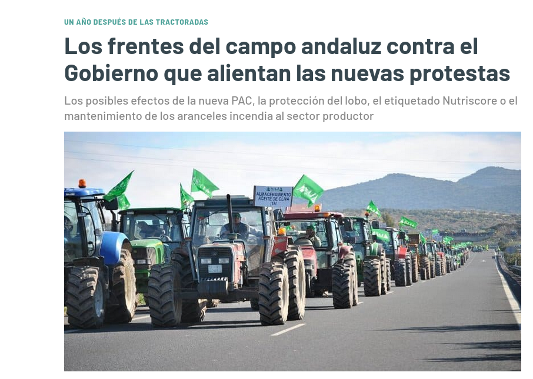

De idea a software libre
Todos los pasos para ayudar a la gente desde
la ingeniería
Granabot 2022
Programando desde 1983
Raku rocks!
Dirigiendo TFGs/TFMs/Tesis...
Ingeniero software senior en polypoly
¿Dónde están las ideas?
Al que le pique, que se arrasque
Un proyecto resuelve un problema
Y resuelve un problema para
alguien
Design thinking: pensando
para el diseño
Metodología enfocada a las
personas, afronta necesidades reales
Parte de un hecho o dato

Empatizar
Problema general: los
agricultores necesitan vender a precios más
justos
¿Qué problema(s) podríamos
solucionar?
Empatía: personalizar los tipos
de usuarios de una aplicación
Personas: diseñar
biografías de los posibles usuarios con nombres.
Venta online de productos
agrícolas con predicción de la
producción.
¿Quién usará esta
aplicación?
Varón, mayor de 50
años, estudios primarios, tecnología más
sólida que moderna
Les presento a Juan Rueda

User journey
¿Qué suele hacer Juan Rueda en relación al problema?
Entramos en territorio de diseño de
producto
Si no hay producto, no hay solución al problema
Del viaje del usuario a las historias de
usuario
¿Qué problema quieres resolver?
¿Para quién?
Como Pilar Mastomar, quiero sacar fácilmente canciones para
el karaoke
Truco para HU
Pensar en el usuario diciendo:
"Ojalá que (yo)..."
Como usuario, quiero hacer login
Ojalá que yo, como usuario, hiciera
login
Tú, como programadora, quieres, que
haga login. Él quiere su karaoke o vender pepinos
Un proyecto de software libre se debe centrar
en
Lo que el cliente quiere
También
Planifica mucho
La ingeniería es un 90% de
planificación y el otro 90% de implementación
¿Cómo lo hacemos?
Productos mínimamente viables de
complejidad creciente
Testea, testea
Pon la "viabilidad" en PMV
Planifica soluciones de problemas, no
tareas
⛔ Añadir base de datos
❤ Los ficheros de karaoke tienen
que almacenarse de forma eficiente
Tres días de programación te ahorran una hora de
planificación
Pon en práctica tus buenas ideas
Si libres, dos veces buenas